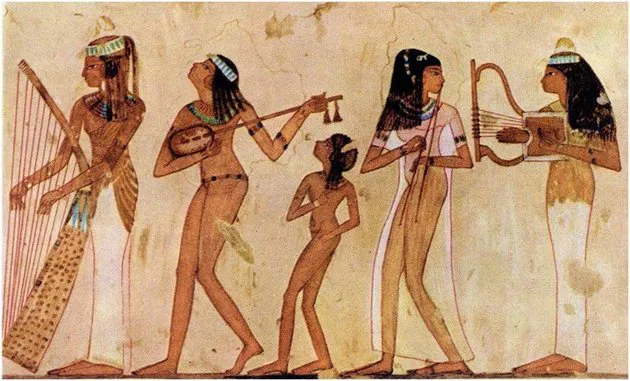
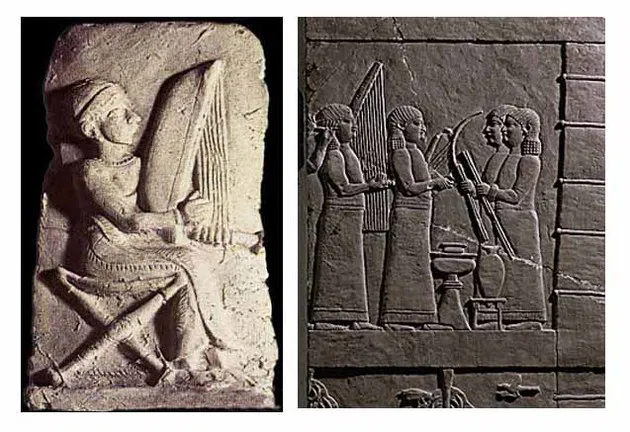
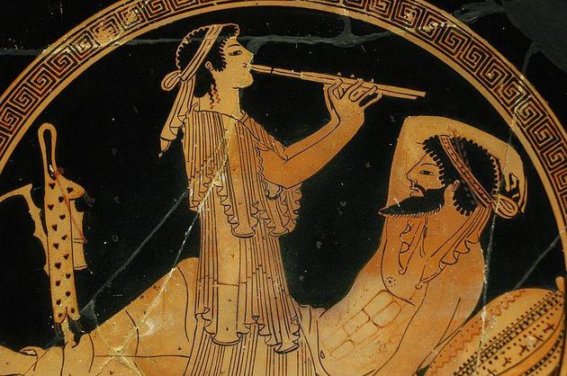
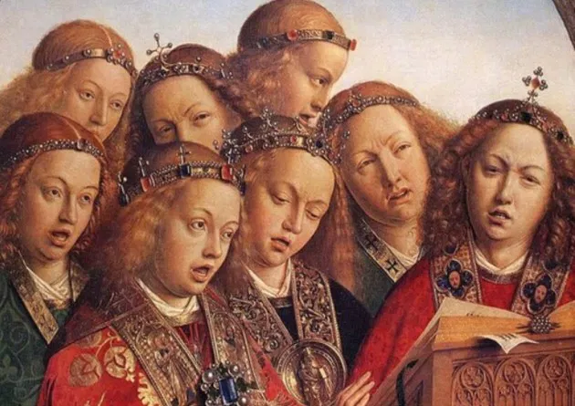
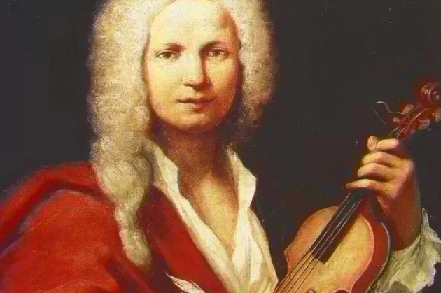
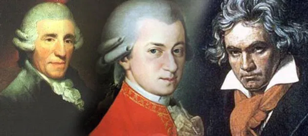
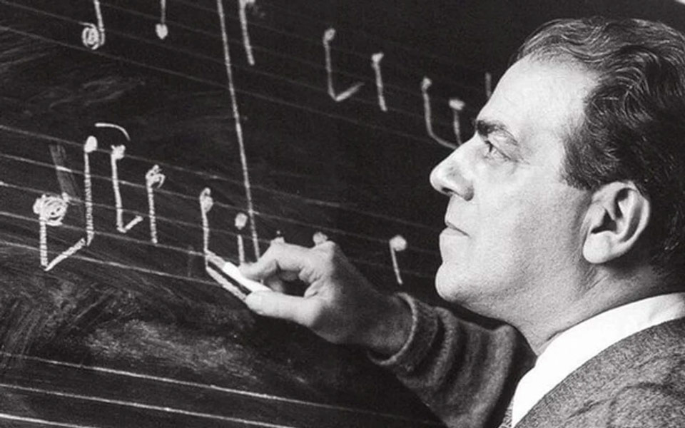

História da Música
A História da música é muito antiga, visto que desde os primórdios os homens produziam diversas formas de sonoridade. Esse é um tipo de arte que trabalha com a harmonia entre os sons, o ritmo, a melodia, a voz.
Todos esses elementos são importantes e podem nos transportar para outro tempo e espaço, resgatar memórias e reacender emoções.
Veremos como essa linguagem artística caminhou durante os séculos até os nossos dias para adquirir as características que possui hoje no Ocidente.
Música na Pré-História
A humanidade possui uma relação longa com a música, sendo essa umas das formas de manifestação cultural mais antigas.
Ainda na pré-história, há mais de 50 mil anos, os seres humanos começaram a desenvolver ações sonoras baseadas na observação dos fenômenos da natureza.
Os ruídos das ondas quebrando na praia, os trovões, a comunicação entre os animais, o barulho do vento balançando as árvores, as batidas do coração; tudo isso influenciou as pessoas a também explorarem os sons que seus próprios corpos produziam. Como, por exemplo, os sons das palmas, dos pés batendo no chão, da própria voz, entre outros.
Nessa época, tais experimentações não eram consideradas arte propriamente e estavam relacionadas à comunicação, aos ritos sagrados e à dança.
A Evolução da Música
Música no Egito

No Egito Antigo, ainda em 4.000 a.C., a música era muito presente, configurando um importante elemento religioso. Os egípcios consideravam que essa forma de arte era uma invenção do deus Thoth e que outro deus, Osíris, a utilizou como uma maneira para civilizar o mundo.
A música era empregada para complementar os rituais sagrados em torno da agricultura, que era farta na região. Os instrumentos utilizados eram harpas, flautas, instrumentos de percussão e cítara - que é um instrumento de cordas derivado da lira.
Música na Mesopotâmia

Na região da Mesopotâmia, localizada entre os rios Tigre e Eufrates, habitavam os povos sumérios, assírios e babilônios. Foram encontradas harpas de 3 a 20 cordas na região onde os sumérios viviam e estima-se que sejam objetos com mais de 5 mil anos. Também foram descobertas cítaras que pertenceram ao povo assírio.
Música na Grécia e em Roma

Podemos observar que a cultura musical na Grécia Antiga funcionava como uma espécie de elo entre os homens e as divindades. Tanto que a palavra "música" provém do termo grego mousikē, que significa "a arte das musas". As musas eram as deusas que guiavam e inspiravam as ciências e as artes.
É importante ressaltar que Pitágoras, grande filósofo grego, foi o responsável por estabelecer relações entre a matemática e a música, descobrindo as notas e os intervalos musicais.
Sabe-se que na Roma Antiga, muitas manifestações artísticas foram heranças da cultura grega, como a pintura e a escultura. Supõe-se, dessa forma, que o mesmo ocorreu com a música. Entretanto, diferente dos gregos, os romanos usufruíam dessa arte de maneira mais ampla e cotidiana.
Música na Idade Média

Durante a Idade Média a Igreja Católica esteve bastante presente na sociedade europeia e ditava a conduta moral, social, política e artística.
Naquela época, a música teve uma presença marcante nos cultos católicos. O Papa Gregório I - século VI - classificou e compilou as regras para o canto que deveria ser entoado nas cerimônias da Igreja e intitulou-o como canto gregoriano.
Outra expressão musical do período que merece destaque são as chamadas Cantigas de Santa Maria, que agregam 427 composições produzidas em galego-português e divididas em quatro manuscritos.
Música no Barroco

A partir do século XVII, o movimento barroco promove mudanças marcantes no cenário musical.
Foi um período bastante fértil e importante para a música ocidental e apresentava novos contornos tonais, com a utilização do modo jônico (modo “maior”) e modo eólio (modo “menor”).
O surgimento das óperas e das orquestras de câmaras também acontece nessa fase, assim como o virtuosismo dos músicos ao tocar os instrumentos. Os maiores representantes da música barroca foram Antonio Vivaldi, Johann Sebastian Bach, Domenico Scarlatti, entre outros.
Música no Classicismo

No Classicismo, que corresponde ao período em torno de 1750 e 1830, a música adquire objetividade, equilíbrio e clareza formal, conceitos já utilizados na Grécia Antiga.
Nessa época, a música instrumental e as orquestras ganham ainda mais destaque. O piano toma o lugar do cravo e novas estruturas musicais são criadas, como a sonata, a sinfonia, o concerto e o quarteto de cordas.
Os artistas que se sobressaíram são Haydn, Mozart e Beethoven.
Música no Século XX

No século XX, a música ganha nova roupagem e uma grande transformação ocorre com o surgimento do rádio.
Novas tecnologias e suportes para a gravação e divulgação musical ajudam a popularizar essa linguagem artística e projetar cantores e compositores, já que eles não dependiam somente dos concertos musicais.
É importante também destacar a presença da música atonal - ou seja, que não possui um centro tonal nem uma tonalidade preponderante. Há também a dodecafônica, que trata as doze notas da escala cromática como equivalentes.
Podemos citar como grandes nomes da música do século XX o brasileiro Heitor Villa-Lobos, o russo Igor Stravinsky, o nigeriano Fela Kuti, a pianista carioca Chiquinha Gonzaga, o norte-americano Louis Armstrong, a francesa Lili Boulanger, o argentino Astor Piazzolla, e muitos outros.